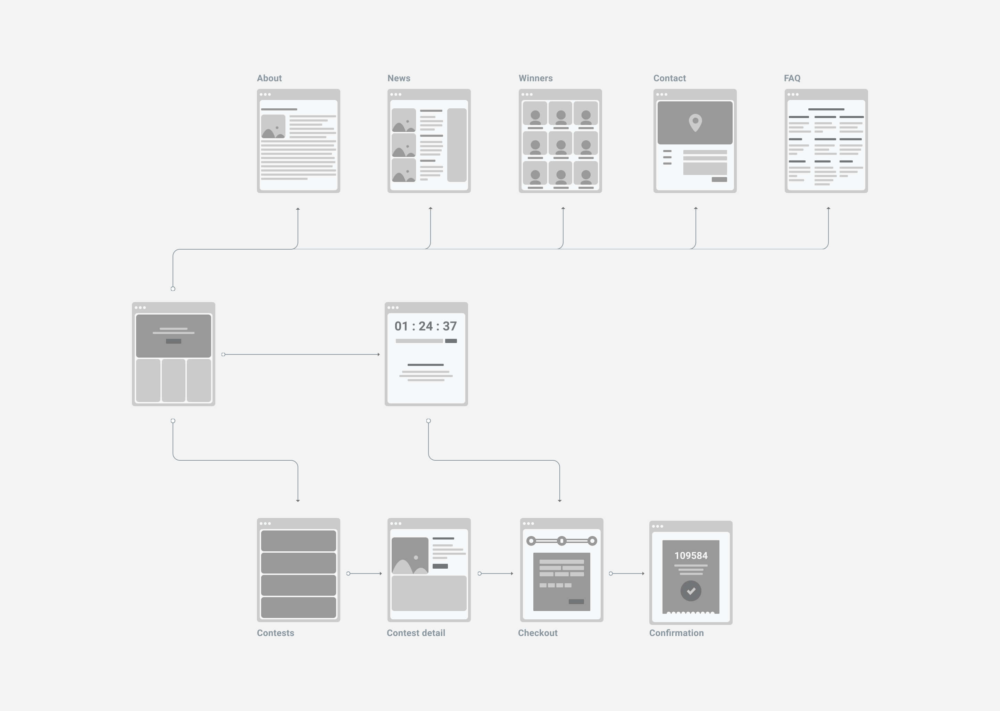
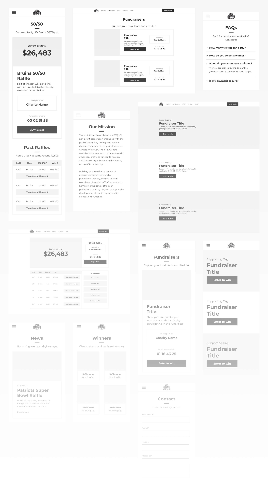
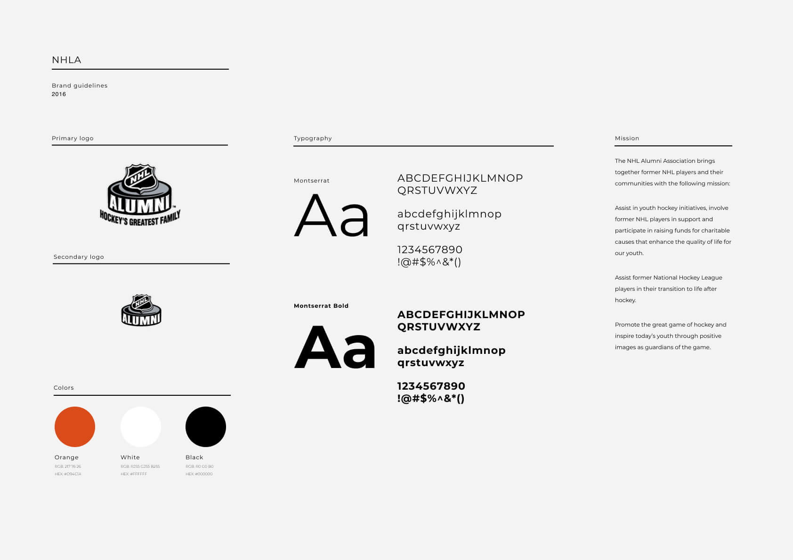
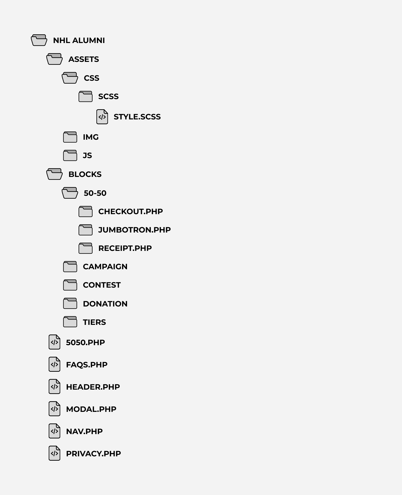

01 — problem
02 — role
fundraising efforts in the professional sports sector are tedious, outdated, and inefficient. the nhl alumni association and partner foundations are dedicated to improving their communities by raising funds and offering grants to local charities. our goal was to empower them with a suite of tools that would transform the way they fundraise and empower them to have a greater impact in those communities.
as the only designer on a small, remote team of three—project manager, back-end developer, and myself—i was tasked with leading ux, design, and front-end efforts. it was the first product i took the lead on and one of the most valuable experiences i've had as a designer.
01 — sitemap
02 — user flows
the front-end product was simple—a few static pages for common content like about, contact, and faqs, and a dynamic purchase experience to accommodate the various types of fundraisers. things would get a bit more complicated on our end, but for our end-users the experience was straightforward.
to better understand both types of our users—foundations creating an event and fans purchasing a ticket—and their relationship to each other, i created maps of their experiences and the decisions each might encounter along the way.
01 - wireframes
02 — styles
03 — patterns
knowing the majority of users would be at a live game when purchasing tickets, a mobile-first approach was particularly important. i started by wireframing individual components i knew we'd be repurposing throughout the product before stringing them together to craft a version of the full experience.
the nhl alumni didn't have much in the way of brand guidelines, so i worked with their existing logo to establish a few basic styles to keep things simple and establish consitency.
with some guiding principles for color and type in place, i began to apply styles to the components used to wireframe the experience, again emphasizing the mobile-first approach before scaling things up to the desktop experience.
01 — structure
02 — implementation
working with mostly html, css, jquery, and wordpress knowledge at the time, i opted for a front-end approach similar to that of my design. creating reusable php blocks would give us a flexible system of components that could piece together any number of experiences without need too many custom pages or styles.
if i knew all i knew now, i certainly wouldn't have used php nor bootstrap for this product—or any project again for that matter—but it was never-the-less a fantastic experience from a product and development perspective. lessons in responsive development, sass, and general project setup and structure have proved invaluable to any project i work on today.
01 - fundraising
02 — ascend
though the product never really reached where i'd hoped as far as design and front-end functionality, it was a major success for the organizations using it. it has enabled teams to reach fans outside of the arena and fundraise millions more over the course of a season as a result.
a year or so after we launched with the nhl alumni and boston bruins foundations, our product was acquired as part of a $40m acquisition that came to be ascend fundraising. they've since implemented what we built into their platform which serves some of the biggest names in sports around the world.